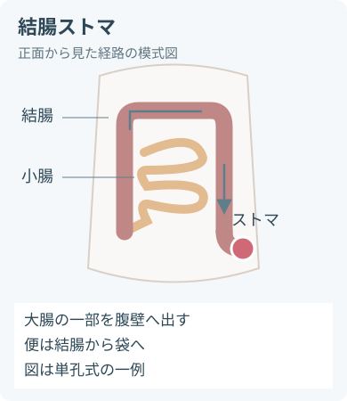
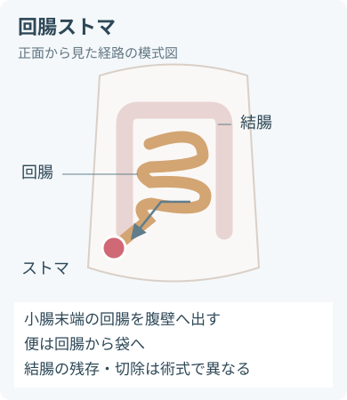
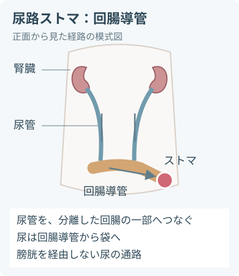
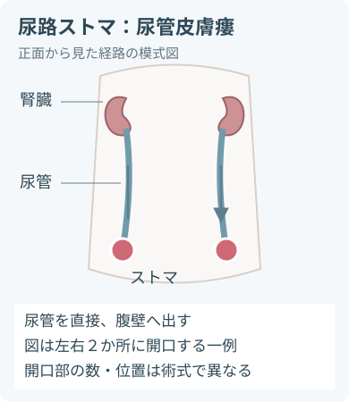
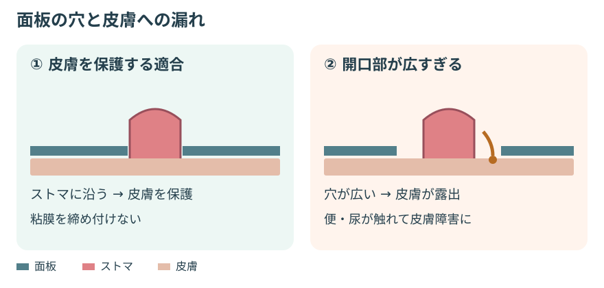

ストマの種類とケアの目的
- ストマ（ストーマ）は、手術で腹壁に作られた便や尿の出口。
- このページで扱うストマ
- 結腸ストマ
- 回腸ストマ
- 尿路ストマ：回腸導管
- 尿路ストマ：尿管皮膚瘻
- 気管孔や胃瘻の管理とは異なる。

- 大腸から便を排出する。
- 便の硬さは造設部位・食事・病状で異なる。
- 観察する項目
- 便
- ガス
- 便秘
- 下痢
- 漏れ
- 皮膚の変化

- 小腸から便を排出する。
- 水分を多く含む便が出やすい。
- 消化液による皮膚障害と、水分・電解質喪失に注意する。

- 腸の一部を尿の通路に用いる。
- 尿は膀胱を経由せず、導管から装具へ流れる。

- 尿管を皮膚へ直接開口する。
- 先に確認すること
- 術式
- 開口部の数
- ステントの有無
- 図は正面から見た排泄経路の模式図。
- 臓器の縮尺や造設位置を一律に示すものではなく、残存する腸管・開口部の数は術式で異なる。
交換前の観察と確認
ストマの観察
- 色
- 湿潤
- 縦の大きさ
- 横の大きさ
- 高さ
- 排出口の位置
- 浮腫
- 出血
- 陥没
- 脱出
- 粘膜と皮膚の接合部
周囲皮膚の観察
- 発赤
- びらん
- 湿潤
- 発疹
- 痛み
- かゆみ
- しわ
- くぼみ
- 腹壁の変化
- 仰臥位だけでなく座位などでも確認する。
排泄物の観察
- 量
- 性状
- 色
- 血液
- 排出の変化
回腸ストマで追加する評価
- 水分出納
- 尿量
- 体重
- 口渇
- めまい
装具の確認
- 前回交換日
- 使用期間
- 面板裏側の溶解
- 便の潜り込み
- 尿の潜り込み
- 漏れの方向
- 袋の重さ
- 排出口の状態
- 接合部の状態
本人と支援体制の確認
- 生活上の希望
- 視力
- 手指機能
- 姿勢
- 理解
- 疲労
- 支援者
- 装具の入手
- 費用
- できることと援助が必要なことを分ける。
- 術後は浮腫が軽減してストマの大きさが変わる。
- 以前の型紙だけに頼らず、変化に合わせて測り直す。
- 術直後の色や排出量は、術式・経過と合わせて評価する。
装具の選択と準備
- 単品系：面板と袋が一体。
- 二品系：面板と袋が別々。
- 便用装具の種類
- 閉鎖型
- 排出口付き
- 尿用装具の機構の例
- 排尿口
- 逆流防止機構
- 便用・尿用を同じ手順で扱わない。
交換に使う物品
- 本人に適した装具
- ストマ計測用具
- 型紙
- はさみ（必要時）
- ぬるま湯
- 柔らかいガーゼ等
- 乾燥用の布
- 廃棄袋
- 計量容器
- 手袋
- エプロン等の防護具
- 寝具保護シート
必要性を評価する補助剤
- 剥離剤
- 皮膚保護リング
- ペースト
- パウダー
面板・リング・ベルトを選ぶ視点
- ストマの高さ
- しわ
- 漏れ
- 圧迫リスク
- 凸面の追加や締め付けを自己判断で強めず、皮膚・排泄ケア認定看護師やストマ外来に相談する。
- 安定したストマの日常ケアでは標準予防策を基本とする。
- 別に確認する処置
- 術後創
- 離開
- ステント等
- 製品の使用方法を優先する。
装具交換の手順
- 説明し、環境と本人の参加を整える
- 交換理由を説明し、準備物をそろえる。
- 手指衛生と必要な防護具を使用する。
環境の確認- プライバシー
- 照明
- 姿勢
- 袋を空にして、面板をゆっくり外す
- 必要な排泄量を測定する。
- 片手で皮膚を支え、面板を急に引き剥がさない。
- 剥離剤を使う場合は製品の指示に従う。
- 面板裏側・ストマ・皮膚を観察する交換時の確認
- 漏れが始まった場所
- 面板の溶け方
- 皮膚障害の位置
- 異常があれば交換を繰り返すだけにせず、原因を評価する。
- やさしく洗い、十分に乾かす
- ぬるま湯と柔らかい布で汚れを落とす。
- 石けんを用いる場合は刺激や残留成分に注意し、十分にすすぐ。
- こすらず押さえて乾かす。
- 計測し、開口部を合わせる
- ストマの形と大きさに合わせる。
- 粘膜を締め付けず、皮膚の露出をできるだけ少なくする。
- 穴の余裕を一律のmmで決めず、製品とストマの状態に合わせる。
- 必要な補助剤を使い、装着する
- 補助剤は目的を明確にし、必要な範囲に用いる。
- 乾いた皮膚へしわなく貼り、製品指示に沿って手で押さえる。
- 二品系は接合が確実か確認する。
- 閉鎖・排液・安楽を確認する
- 袋の排出口を閉じる。
- 尿用の夜間排液では接続と尿の流れも確認する。
- 終了後に行うこと
- 廃棄
- 手指衛生
- 記録
装着後の確認- 圧迫
- 牽引
- 漏れ

- 狭すぎて粘膜を圧迫しない。
- 広すぎて皮膚を露出させない。
- 大きさだけでなく、下記も評価する。適合評価で合わせて見る項目
- 高さ
- しわ
- 排出口の向き
漏れと周囲皮膚障害への対応
- 周囲皮膚の障害を「ストマがあるから仕方ない」と扱わない。
- 周囲皮膚障害の主な原因
- 漏れによる刺激
- 粘着剤による剥離・損傷
- 接触皮膚炎
- 感染
漏れ・灼熱感・かゆみがあるとき
- 予定の交換日を待たず、装具を外して皮膚と面板裏側を確認する。
- 漏れをテープで覆い足すだけでは、皮膚への接触が続く。
湿潤・びらんがあるとき
- 装具の適合を見直し、必要な局所ケアを相談する。
- パウダーは適応部位に薄く用い、余分を除く。
- 正常な皮膚に毎回一律で使用しない。
接着不良の確認
- 水分
- 石けんの残留
- 油性クリーム
- 補助剤の過量
- しわ
- 排泄物の潜り込み
交換間隔と袋の管理
- 漏れる前に交換できる安定した使用期間を本人ごとに設定する。
- 頻回交換による皮膚損傷と、長すぎる使用による漏れの両方を避ける。
- 袋が重くなる前に排泄物を捨てる。
- 量の目安と排出口の清掃・閉鎖は製品や本人の生活に合わせる。
日常ケアとして追加しないこと
- 毎回の消毒薬塗布
- 強くこする
- 装具の下への油性軟膏の広範囲塗布
回腸ストマ：排泄量と脱水
- 排出量の増加は水分・ナトリウムなどの喪失につながる。
水分・電解質喪失の評価
- 24時間の排出量
- 摂取量
- 尿量
- 体重
- 血圧
- 脈拍
- 口渇
- 倦怠感
- めまい
- 腎機能
- 電解質
高排出量ストマは「量」だけでは決めない
- 高排出量ストマでは、しばしば1日1.5〜2Lを超える排出がみられる。
- 問題になる量は、摂取量と水分・電解質の損失によって異なる。
- 閾値未満でも尿量低下や脱水徴候があれば報告する。
急な排出量増加で評価する原因
- 感染
- 閉塞の前後
- 薬剤
- 「水をできるだけ多く飲む」で一律に対応しない。
- 医療チームの個別計画に従う項目
- 飲水の種類
- 飲水量
- 経口補水
- 輸液
- 薬剤
- 自己判断で飲水制限や薬剤の増減を行わない。
尿路ストマで追加する確認
尿と全身状態の観察
- 尿量
- 色
- 血尿
- 排出の連続性
- 発熱
- 悪寒
- 側腹部痛
- 混濁やにおいだけで感染と断定しない。
- 回腸導管では腸粘膜からの粘液が尿に混じることがある。
- 粘液と合わせて評価する項目
- 尿量低下
- 閉塞
- 血液
- 全身症状
夜間バッグを使うとき
- バッグをストマより低い位置に置く。
- 接続後に尿が流れることを確認する。
夜間バッグの安全確認
- 床への接触を避ける
- チューブの屈曲を防ぐ
- チューブの圧迫を防ぐ
- 牽引を防ぐ
ステントの確認
- 種類
- 留置目的
- 固定
- 抜去予定
ステントで自己判断しない操作
- 抜く
- 切る
- 押し戻す
- 洗浄する
培養などの採尿
- 施設の手順と医療者の指示に従う。
- 使用中の袋や夜間バッグ内に長時間たまった尿を、そのまま培養検体にしない。
すぐに報告する変化
血流障害が疑われる色
- 新たな暗紫色
- 灰色
- 褐色
- 黒色
- 著しい色の変化
直ちに報告する出血
- 持続する出血
- 大量出血
- 袋内にたまる血液
- 循環の変化
- 洗浄時の少量の接触出血と区別する。
閉塞が疑われる症状
- 排出の停止
- 排出の急減
- 腹痛
- 膨満
- 悪心
- 嘔吐
- 排出の停止・急減に腹部症状が伴う場合は、決まった時間を待たず評価する。
脱水・全身状態悪化のサイン
- 尿量の明らかな低下
- 強い口渇
- 立ちくらみ
- 頻脈
- 血圧低下
- 意識の変化
尿路の異常
- 尿が流れない
- 発熱
- 悪寒
- 側腹部痛
- 血尿の増加
早めに相談する局所の変化
- 新しい陥没
- 新しい脱出
- ストマ周囲の膨隆
- 接合部の離開
- 広がる皮膚障害
- 疼痛や色の変化を伴う脱出・膨隆は緊急評価が必要。
自己判断で行わない操作
- ストマを押し戻す
- 器具を挿入する
- 洗腸する
本人のセルフケアと暮らしを支える
気持ちと希望を確かめる
- 本人が見る・触れることへの気持ちを確認し、受け入れを急がせない。
- 生活上の不安や希望に応じた相談先を整える。
相談できる生活上の課題
- ボディイメージ
- 漏れへの不安
- においへの不安
- 睡眠
- 外出
- 仕事
- 性生活
段階的に練習する
セルフケアの練習項目
- 物品準備
- 排泄物の処理
- 装具交換
- 皮膚観察
- 説明を聞くだけでなく、本人の操作と説明で理解を確かめる。
- 視力や手指機能に合わせた装具・補助具を選び、必要な部分だけ支援する。
- 家族の参加は本人の意向を確認する。
食事と水分を相談する
- 食事は術後段階と排出の変化に合わせる。
- 一律に食品を禁止しない。食事・水分で相談する項目
- よく噛むこと
- 便との関係
- ガスとの関係
- 個別の水分計画
退院後の備えを整える
一緒に確認する備え
- 外出用の交換物品
- オストメイト対応トイレ
- 装具の注文先
- ストマ外来の連絡先
- 災害時の備え
- 装具費の助成や身体障害者手帳等は、ストマの状況と自治体の制度で異なる。
- 医療ソーシャルワーカーや自治体窓口へつなぐ。
記録と引き継ぎ
手術と留置物
- 術式
- 造設日
- ストマの位置
- ストマの数
- ステント等の有無
ストマと皮膚
- 色
- 縦の大きさ
- 横の大きさ
- 高さ
- 形
- 排出口
- 接合部
- 皮膚の状態
- 症状
- 皮膚障害は時計方向・広さなどで位置を共有する。
排出と全身状態
- 排出量
- 測定時間
- 便の性状
- 尿の性状
- 摂取量
- 尿量
- 体重
- 関連する検査値
- 全身症状
装具と交換後の評価
- 装具名
- 装具の型
- 開口部
- 補助剤
- 交換日時
- 面板裏側の状態
- 漏れの位置
- 装着後の評価
セルフケアと対応
- 本人の実施範囲
- 理解
- 不安
- 支援内容
- 異常の報告先
- 対応
- 再評価
- 次回の計画
出典
- 日本ストーマ・排泄リハビリテーション学会：ストーマリハビリテーション講習会 基礎コース学習目標
- 日本ストーマ・排泄リハビリテーション学会：介護職員のための学習目標
- WOCN Society：Peristomal Skin Assessment Guide for Clinicians
- NHS：What is an ileostomy?
- NHS：How a colostomy is done
- 国立がん研究センター がん情報サービス：膀胱がん 治療（尿路変向術）
- 国立がん研究センター がん情報サービス：大腸がん 療養
- NHS：Complications of an ileostomy
- Nightingale JMD. How to manage a high-output stoma. Frontline Gastroenterology. 2022;13:140–151.
- Memorial Sloan Kettering Cancer Center：About Your Urostomy
- WOCN Society：Catheterization of an Ileal or Colon Conduit Stoma（2018）
文献確認：2026年9月17日。装具の選択・使用方法は製品の説明書、術後経過と個別のケア計画に合わせる。